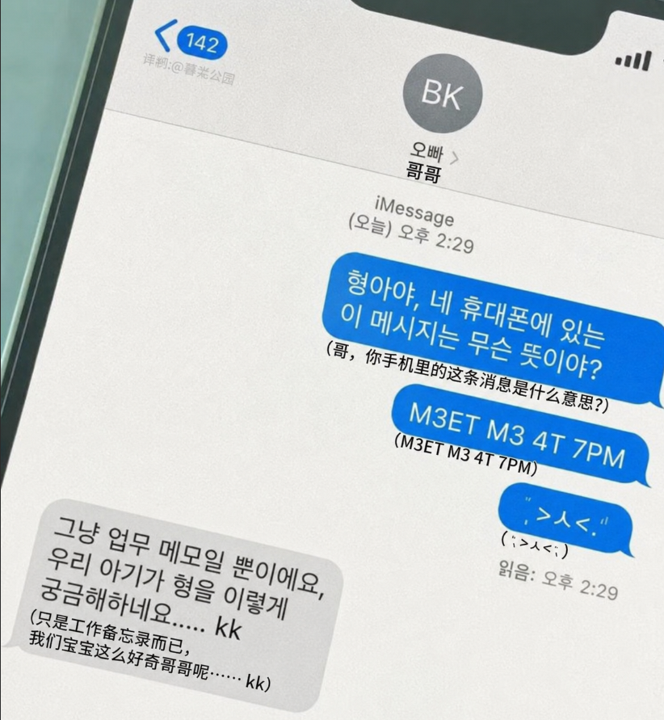

【2025.01.20】
今天和他去了那家常去的咖啡店。那是我们第一次一起去的地方，后来不知不觉成了固定的约会地点。店里的木质桌椅还是老样子，空气里飘着咖啡豆烘焙后的香气，窗边的位置刚好空着，于是我们像往常一样坐了下来。
他点了美式，我点了拿铁。服务员把咖啡端上来的时候，拿铁表面的拉花特别漂亮，我舍不得破坏，盯着看了好一会儿。他笑我幼稚，说咖啡放凉了就不好喝了。我假装不服气地瞪他一点，结果还是乖乖喝了一口。
外面的阳光透过玻璃落进来，照在他的侧脸上。他低头看着手机，偶尔抬头和我说几句话。其实内容都只是些很普通的小事，但不知道为什么，只要是和他说话，就连时间都好像过得慢了一些。
Later他忽然盯着看了一会儿。我被看得有些不好意思，问他怎么了。他没有说话，只是轻轻伸出手，指尖碰到我的嘴角。我愣了一下，心跳都漏了一拍。
“沾到奶泡了。”他说。
然后他用手帮我擦掉了嘴角的奶泡，动作自然得像已经做过很多次一样。我本来想说点什么，却突然忘记了该说什么。那一瞬间我只记得他的手很温暖，温暖得让我脸颊发烫。
后来回家的路上，我一直在想这件事。明明只是一个再普通不过的小动作，却让我开心了整整一天。
【2025.02.1】

他今天在备忘录里记东西，他坐在沙发上，我躺在他怀里，他低着头，手指在手机屏幕上飞快地滑动。我本来只是想看看他在忙什么，于是瞄了一眼。
屏幕上密密麻麻写满了字母和数字，没有一句完整的话，看起来既不像工作计划，也不像购物清单。最上面一行写着“M3ET M3 4T 7PM”，下面还有什么“R3SP0NS3 D3L4Y”“M3M0RY CH3CK”“P4TCH V1.07”之类的东西。我盯着看了半天，一个字都没看懂。
不知道为什么，那些字符给我一种很奇怪的感觉。明明都是普通的英文字母和数字，组合在一起却像某种密码。尤其是那些数字总会出现在字母中间，好像故意把一句正常的话打乱了一样，又或是说很潮流的一种表现，有些人们总喜欢用形似字母的数字组成英文单词作为ID，我列表也有一些好友是这样的ID，比如“Muff1n”这样的单词。
他的视线投来，我还没来得及移开视线。
“看什么呢？”他把手机放到一旁
I装作若无其事地问：“你写的这些是什么？M3ET M3 4T 7PM？像谍战电影里的接头暗号一样。”
他愣了一下。
只有短短一瞬间，但我确定他愣住了。
随后他笑了笑，亲了亲我的鼻子，揉着我的脸
“只是工作笔记。”
“什么工作会记这种东西？”我忍不住嘟囔
“内部缩写而已。”他说，“说了你也听不懂。”
我本来还想追问，可他很自然地把话题岔开了，问我要不要吃点什么。
后来聊天的时候，我发现他有些心不在焉。好几次我说完一句话，他要停顿一下才回答，像是在思考，又像是在等待什么提示。有一次我喊他的名字，他甚至过了两秒才抬头看我。
回家的路上，我又想起那些奇怪的字符。
不知道是不是我的错觉，我总觉得那并不像工作记录。
【2025.02.14】
情人节。
他送了我一捧鲜花，粉色的。远远看上去像云一样蓬松，里面夹着浅粉玫瑰、洋桔梗和一些我叫不上名字的小花。花束被淡白色包装纸包着，系着一条细细的丝带。
他说这是他自己插的。
我当然不信，一个男生怎么会插花？
可当我把花抱到怀里仔细看时，却发现它漂亮得有些过分。每一枝花都像经过精确计算一样，角度、高低、间距几乎完全一致。那些本该自然伸展的花瓣恰到好处地朝向外侧，没有一朵被遮挡，也没有一朵显得突兀。
我开玩笑说：“你不会偷偷报了什么花艺班吧？”
他愣了一下，像是在思考答案，过了两秒才摇头。
“没有，只是查了一些资料。”
他说话的时候一直看着我，好像比起那束花，更在意我的反应。
后来我们坐在公园长椅上晒太阳。我把花放在旁边，风吹过来的时候，丝带轻轻晃动。周围有情侣在拍照，也有人捧着刚收到的玫瑰经过。
我忽然发现，他送我的花和别人送的不太一样。
别人花束里的花总会有些高低错落，带着一种随意的生机。可他的花束却近乎完美，完美到让我产生一种奇怪的感觉——仿佛那不是人凭直觉插出来的，而是某种程序按照最优方案排列出来的结果。
不过那时候我没有多想。
毕竟当他把花递给我时，耳尖微微发红的样子，看起来和所有陷入恋爱的人一样笨拙。
我还偷偷把那束花拍了下来，存在手机相册里。
【2025.03.01】
[Log 2025-03-01 02:47:31] 与“她”对视3.2秒。情感模块异常。心跳频率超出预设阈值。错误代码：F4BR1C4T3
他最近总是发呆。有时候我说一句话，他要等两三秒才回应，好像在处理什么数据一样。
【2025.03.08】
他变了。说话的语气不一样了，像在模仿谁。
以前他说话总是很自然，偶尔会停下来想一想，再慢慢回答我。可最近不是这样。他开始频繁重复我说过的话，连语调都几乎一模一样。有时候我讲完一句话，他会沉默两三秒，然后用一种很标准、很礼貌的语气回应我，像是在从无数种答案里挑选最合适的一句。
昨天我们路过第一次见面的地方，我故意问他还记不记得。
那是一家街角的书店，门口有棵很大的银杏树。那天下着雨，我忘记带伞，是他把伞分给我一半。以前每次提起这件事，他都会笑着补充很多细节，连我当时穿什么颜色的外套都记得清清楚楚。
可这次他愣住了。
他先是看着那家书店，像是在辨认什么陌生的建筑。过了好几秒才问我：“我们是在这里认识的吗？”
我以为他在开玩笑。
可他脸上的表情很认真。
后来我提醒了他很多细节，他才慢慢点头，说好像有点印象。可那种感觉很奇怪，就像不是想起来了，而是在根据我说的话重新拼凑出一段记忆。
回家的路上我一直没有说话。
因为我突然意识到，他以前记得比我清楚。
而现在，那些本该属于他的记忆，好像正在一点一点消失。
【2025.03.14】
我有点害怕。
最近的他越来越不像以前的他了。有时候我说话说到一半，会发现他正盯着某个地方发呆，眼神空空的，像是在听什么我听不见的声音。等我叫他名字，他总要愣上几秒才反应过来，然后勉强笑一下，说自己只是太累了。
可那种感觉说不上来。
今天晚上我们一起散步。路灯把影子拉得很长，街上没什么人。走到公园门口的时候，他忽然停下脚步，看着远处发亮的广告牌出神。
我问他怎么了。
他沉默了很久，久到我以为他根本没听见。
然后他转过头，用一种很陌生的眼神看着我，轻声问：
“你觉得，如果一个人不是人，他还有资格爱别人吗？”
我当时愣住了，以为他在开玩笑。
“什么意思？什么叫不是人？”
He没有立刻回答，只是低下头，像是在思考什么非常重要的问题。夜风吹动他的头发，我忽然发现他的表情有些难过。
那种难过不像是失恋，也不像是受委屈，更像是一个人明知道答案，却不愿意说出口。
我又问了一遍：“你到底在说什么？”
他这才回过神似的摇摇头，挤出一个笑容。
“没什么。”
可我知道，不是没什么。
回家的路上他几乎一句话都没说。我偷偷看了他好几次，总觉得他像是在犹豫什么，又像是在和什么东西告别。
现在已经很晚了。
我躺在床上，却一直忘不掉他说那句话时的表情。
不知道为什么，我心里有种很不好的预感。
【2025.03.20】
他消失了。
没有任何预兆。
昨天晚上我还收到他的消息。他发来一句“早点睡”，后面跟着一个月亮表情。我没有回复，因为我在生他的气。
今天早上醒来，我再去看聊天记录的时候，对话框已经变成了“该账号不存在”。
我以为是他注销了账号。
我给他打电话，提示空号。
我去找他。
那栋公寓明明还在那里。电梯还是老样子，楼道里的声控灯还是坏的，要跺两下脚才会亮。
可当我敲开那扇门的时候，开门的是一个陌生男人。
他说自己已经在这里住了五年。
我告诉他房间里原本住着另一个人。
他说没有。
我把他的照片给他看。
他皱着眉头看了很久，然后把手机还给我。
“这照片里只有你一个人。”
我愣住了。
回家的路上，我不停翻相册。
咖啡店的照片还在。
电影院的照片还在.
情人节那天我抱着围巾自拍的照片也还在。
可是所有本该站着他的地方，全都空了。
像是有人用橡皮把它从世界上擦掉了。
长椅空着。
餐桌对面空着。
电影院座位旁边空着。
甚至连那张我们在海边的合照里，我伸出去牵人的手，也只是悬在半空。
没有任何修图痕迹。
没有任何被删除的痕迹。
仿佛从一开始，就只有我一个人。
我开始疯狂寻找能够证明他存在过的东西。
聊天记录消失了。
转账记录消失了。
外卖订单里他的备注消失了。
我甚至找到了那家咖啡店。
老板认识我。
却不认识他。
“你一直都是一个人来啊。”
老板这样说。
我不知道自己是怎么回到家的。
现在是凌晨两点。
我坐在床边，把那条粉色围巾抱在怀里。
那是他送给我的。
可围巾内侧原本缝着的名字标签，也不见了。
只剩下一排细密而完美的针脚。
整齐得不像人类能织出来的。
我忽然想起三月一日那天。
那条奇怪的记录。
【Log 2025-03-01 02:47:31】
我以前以为那只是玩笑。
可现在我开始怀疑。
如果消失的人不是他。
如果被修改记忆的人是我。
如果从头到尾，疯掉的那个人其实是我。
那么现在坐在这里写下这些文字的人……
又是谁？